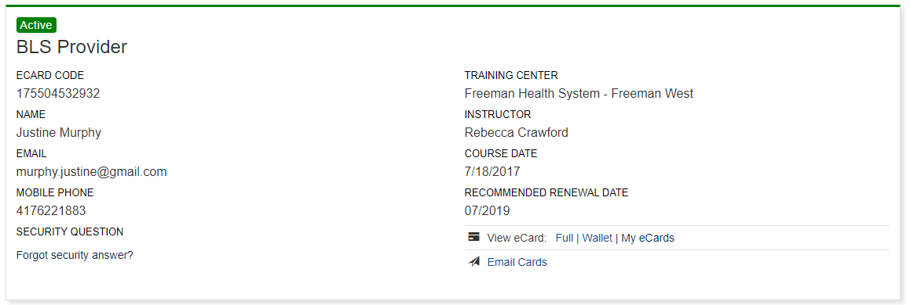

Hello! My name is Justine Murphy. I would like to start off by saying that I have always had a passion for people and teeth. When I was 13, I got my braces off, and on that day I had a new perspective on teeth. I had no idea having nice, straight white teeth would give me so much confidence and self-worth. I want a helping hand in giving people confidence. Other than teeth, I enjoy spending time with my family and friends, being outdoors, staying healthy, and helping people. I have had many different jobs ranging from lifeguard to office manager at an auto body shop, but none of then felt quite right. In 2015, I decided to return to school and become a registered dental hygienist.
My mission is to continue my education as a health care professional and educate others. I want to be an example and show people that they can make a difference. I genuinely care for others and want to positively impact their lives. I will volunteer my time to help teach the importance and connection of oral and systemic health.
(C.1, C.2, C.3, C.14)
Core competencies are something that strengthens over time, and when practiced will help make a better living environment. Applying a code of ethics will help individuals see the difference from right and wrong. Critical thinking is essential in assisting in diagnosing patients and coming up with a differential diagnosis. As a health care professional, promoting value and assuring quality is imperative. Patient need to know the importance in oral health and how it can cause systemic effects. Some of these systemic effects can flare up in the dental office. As a health care professional, it should be second nature to know how to handle a medical emergency and be familiar with the proper protocol.
Medical Emergency PowerPoint
How to handle insulin shock. This illiterates the correct protocol when a patient is experiencing a hypoglycemic episode. There is a situation when a patient’s glucose levels and one when the patient becomes unconscious.
Ethical Dilemma Paper
Explains difference from right and wrong in a situation that will be faced in the dental field. This paper involves critical thinking, patient education, valuing the profession, and remembering the code of ethics.
(HP.2, HP.3, HP.4, HP.5)
The oral condition can say a lot about someone’s health. Dental hygiene is the only health care professional that specializes in prevention. We can help patients understand the importance of overall health starting with the oral cavity. We would first implement positive goals and strategies for promoting oral and systemic health.
Nutritional Counseling Paper
Promoting healthy eating, educating patient on exposure time, explaining why some foods are better than other when it comes to oral care.
OHI PowerPoint
Education on proper ways to brush.
Smoking Cessation Paper
Smoking Cessation PowerPoint
Education on the effects of smoking. Explaining the impact smoking has on overall health and oral health and how to quit.
(CM.1, CM.2, CM.3, CM.7)
A strong community holds value. As an advocate to promote oral health, the most rewarding is helping educate the under-served populations through free screenings. This gives all health care professional the chance to help encourage their community to stay healthy. At these screening we can teach others how to properly brush, discuss the benefits of fluoride, and explain the importance of a self exam.
Lesson Plan
A plan to educate hospice staff on oral conditions and proper ways to brush teeth and dentures.
(PC.1, PC.3, PC.4, PC.7, PC.9, PC.10)
The standard of care for a patient involves critical thinking about the patient’s overall health and well-being. It is vital to understand and be familiar with the dental considerations with medications and systemic diseases. Some of these disease may be diagnosed in the dental chair, and some of them may be exacerbated in the dental chair, which ever the case, dental professionals should be aware of the possibilities.
Clinical Case Study PowerPoint
Pathology Case Study Paper
Pharmacology Case Study Paper
Showing critical thinking skills about individual cases, breaking down the steps to assess and diagnose, and coming to a conclusion.
(PGD.1, PGD.3)
Continuing to learn will open up more opportunities and allow expansion in the field of dentistry. Continuing education will benefit the patient and clinician, due to staying informed and learning about new studies.
Continuing Education Certificate
In my Journey, I have learned how to critically think, be cognizant of others needs, be more observant, desire further education, and educate others. I believe these new skills will help me be a better clinician and person overall. My studies have encouraged me to grow and keep growing, that everything is changing and not be afraid of it, the right knowledge is what helps us grow. There were many challenges I faced during my education and making it through them made me a stronger person.
Registered Dental Hygienist (May 2019)
Health Science BS with emphasis in Biology
CPR 